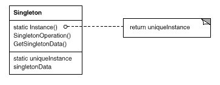

意图：
保证一个类仅有一个实例，并提供一个访问它的全局访问点。
结构图：

代码示例：
public class Singleton {
private static Singleton instance = new Singleton();
private Singleton() {
}
public static Singleton getInstance() {
return instance;
}
public void test() {
System.out.println("Singleton test");
}
public static void main(String[] args) {
Singleton s = Singleton.getInstance();
s.test();
}
}
效果：
因为Singleton类封装它的唯一实例，所以它可以严格的控制。
注意：
Singleton不是说只能唯一，也可以控制其实例的数量，对多个实例的创建和控制。
Singleton类可以有子类，而且用这个扩展类的实例来配置一个应用是很容易的。你可以用你所需要的类的实例在运行时刻配置应用。
实现：
保证一个唯一的实例是该模式的重点，不同语言对此有不同的方法。面对语言特性，还需要注意并发同步等问题。
相关模式：
Abstract Factory、Builder、Prototype都可以用Singleton实现。